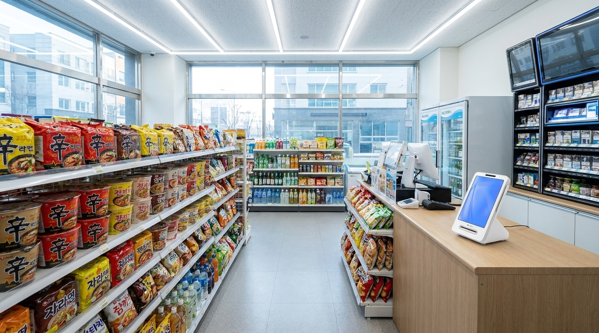
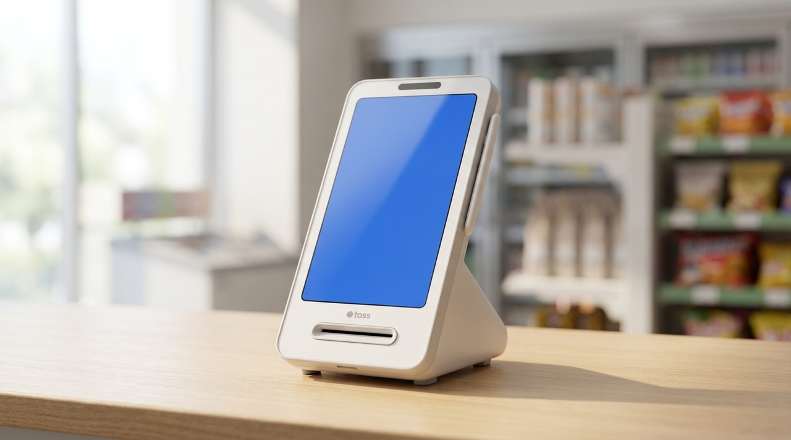
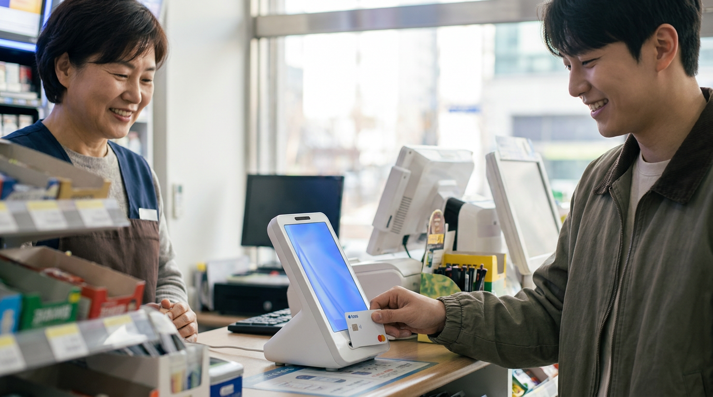

토스단말기 설치, 신청부터 개통까지 실제로 어떤 순서로 진행될까요
가게 문 여는 날짜는 정해졌는데 결제기는 언제 신청해야 하는지 몰라 마지막까지 미루는 분들이 많습니다. 저희가 수도권 매장을 직접 방문해 설치하면서 가장 자주 듣는 질문도 "지금 신청하면 오픈 날에 맞출 수 있나요"입니다. 결론부터 말씀드리면, 순서를 알고 서류만 미리 챙겨 두면 대부분 여유 있게 맞출 수 있습니다. 문제는 절차가 어려워서가 아니라 어느 단계에서 무엇이 필요한지 모른 채 기다리는 시간 때문에 늦어진다는 점입니다. 이 글에서는 신청부터 개통까지의 실제 순서를, 편의점처럼 계산대가 하루 종일 돌아가는 매장을 기준으로 정리했습니다.

결제기 설치는 '주문'이 아니라 '심사'가 포함된 절차입니다
가장 많이 오해하시는 지점입니다. 결제 단말기는 물건을 사서 받는 것으로 끝나지 않습니다. 카드사와 연결되는 가맹점 등록 절차가 함께 진행되기 때문에, 사업자 정보가 확인되고 심사가 완료되어야 실제로 카드가 승인됩니다. 기기를 먼저 받아 두어도 이 절차가 끝나지 않으면 결제를 받을 수 없습니다.
그래서 순서는 이렇게 흘러갑니다. 상담으로 매장 상황과 필요한 구성을 정하고, 서류를 제출해 가맹점 등록을 신청하고, 심사가 진행되는 동안 기기를 준비하고, 심사가 완료되면 매장에 방문해 설치와 개통을 마칩니다. 각 단계는 서로 이어져 있어서 앞 단계가 밀리면 뒤가 통째로 밀립니다.
여기서 시간이 가장 많이 걸리는 구간은 기기 준비가 아니라 서류입니다. 사업자등록이 아직 안 되었거나, 상호·주소가 실제 매장과 다르거나, 통장 사본의 명의가 대표자와 다르면 그 자리에서 진행이 멈춥니다. 반대로 서류가 한 번에 맞으면 나머지는 비교적 빠르게 진행됩니다.
오픈 날짜에서 거꾸로 계산하시는 편이 안전합니다
편의점이나 무인 매장처럼 문을 여는 순간부터 결제가 발생하는 업종은, 오픈 당일에 결제기가 작동하지 않으면 그날 매출을 통째로 놓칩니다. 그래서 저희는 오픈 날짜를 먼저 여쭙고 거기서 역산해 일정을 잡아 드립니다.

인테리어 공사가 끝나는 날, 전기와 인터넷이 들어오는 날, 그리고 오픈 날. 이 세 날짜만 알려 주셔도 언제 서류를 준비하고 언제 설치 방문을 잡을지 정리가 됩니다. 특히 인터넷 개통일은 중요합니다. 결제기가 통신망을 쓰기 때문에, 인터넷이 아직 안 들어온 매장은 설치 방문을 해도 개통 확인을 끝까지 마치기 어렵습니다.
여유를 두시는 편이 좋습니다. 서류 보완이 한 번 발생하면 그만큼 뒤로 밀리고, 오픈 직전 주는 사장님도 정신이 없어 연락이 어렵습니다. 최소한 오픈 전 주에는 심사가 끝나 있도록 잡아 두시면 마음이 편합니다.
미리 챙겨 두면 한 번에 끝나는 것들
| 준비 항목 | 왜 필요한가 |
|---|---|
| 사업자등록증 | 가맹점 등록의 기준 정보. 상호·주소가 실제 매장과 같아야 함 |
| 대표자 명의 통장 사본 | 매출 입금 계좌. 명의가 다르면 진행 중단 |
| 대표자 신분증 | 본인 확인용 |
| 매장 실제 주소·연락처 | 설치 방문 일정과 A/S 접수 기준 |
| 인터넷 개통 예정일 | 설치·개통 가능 시점 판단 |
| 계산대 위치와 콘센트 자리 | 방문 시 배선 정리를 한 번에 끝내기 위함 |
이 표의 항목은 저희가 상담 때 실제로 여쭙는 내용입니다. 미리 사진으로 찍어 두셨다가 보내 주시면 통화 한 번으로 정리되는 경우가 많습니다.

설치 당일에는 무엇을 확인하면 되나요
방문 설치가 끝나면 그 자리에서 실제 카드 한 장으로 승인과 취소를 해 보는 것이 가장 확실합니다. 승인이 되는지, 영수증이 제대로 나오는지, 취소가 되는지까지 확인하면 오픈 날 당황할 일이 거의 없습니다. 저희는 수도권 매장은 직접 방문해 설치하고, 이 확인 절차까지 함께 보고 나옵니다.
또 하나, 계산대 뒤 배선을 그날 정리해 두시는 것을 권합니다. 나중에 청소하다 선이 빠지거나 눌리는 일이 의외로 잦습니다. 설치 기사에게 "선 정리도 부탁드립니다"라고 한마디만 하시면 됩니다.
개통 뒤 첫 일주일에 확인해 두면 좋은 것
설치가 끝났다고 준비가 끝난 것은 아닙니다. 오픈 첫 주에는 평소와 다른 일이 자주 생깁니다. 손님이 몰리는 시간이 예상과 다르고, 생각지 못한 결제 수단을 꺼내는 손님이 오고, 취소나 환불이 필요한 상황도 처음 겪게 됩니다.
그래서 첫 주에는 세 가지만 챙겨 보시길 권합니다. 첫째, 취소와 환불을 한 번씩 직접 해 보시는 것입니다. 급한 상황에서 처음 해 보면 손이 굳습니다. 한가할 때 소액으로 한 번 해 두면 실제 상황에서 당황하지 않습니다. 둘째, 영수증 용지가 얼마나 빨리 줄어드는지 확인하는 것입니다. 편의점처럼 결제 건수가 많은 매장은 예상보다 빨리 소진됩니다. 여유분을 어디에 두는지 정해 두시면 바쁜 시간에 찾아 헤매지 않습니다.
셋째, 하루 마감에서 매출이 어떻게 보이는지 한 번 확인하시는 것입니다. 첫날에 이 화면을 익혀 두면 그 뒤로는 습관이 됩니다. 반대로 미뤄 두면 한 달치가 쌓인 뒤에 처음 열어 보게 되고, 그때는 무엇이 맞고 무엇이 틀렸는지 판단하기 어려워집니다.
저희가 수도권 매장에 직접 방문하는 이유도 여기에 있습니다. 기기를 놓고 나오는 것으로 끝내면 이 첫 주의 질문들이 전부 사장님 몫이 됩니다. 설치 때 함께 눌러 보고, 그 뒤에 생기는 질문은 전화로 이어서 도와 드립니다.
자주 묻는 질문
Q. 사업자등록증이 아직 안 나왔는데 미리 상담해도 되나요?
됩니다. 상담과 구성 결정은 사업자등록 전에도 가능합니다. 다만 가맹점 등록 신청은 사업자등록증이 나온 뒤에 진행되므로, 그 사이 기간을 감안해 일정을 잡아 드립니다.
Q. 기존에 쓰던 결제기가 있는데 교체하려면 다시 처음부터 해야 하나요?
기존 계약 상태와 남은 조건에 따라 절차가 달라집니다. 지금 쓰고 계신 서비스와 계약 시점을 알려 주시면 필요한 부분만 정리해 안내해 드립니다.
Q. 설치 비용이나 월 부담은 어떻게 되나요?
매장 구성과 필요한 기기 수에 따라 달라지므로 상담 시 직접 공급가로 안내해 드립니다. 토스단말기는 약정 없이 이용하실 수 있어 부담을 낮추고 시작하시는 분들이 많습니다.
Q. 수도권이 아니어도 설치가 되나요?
가능합니다. 다만 방문 일정은 지역에 따라 달라질 수 있어, 매장 주소를 알려 주시면 가능한 일정으로 안내해 드립니다.
순서만 알면 오픈 준비에서 걱정 하나가 줄어듭니다
결제기 설치는 오픈 준비 목록에서 가장 뒤로 밀리기 쉬운 항목입니다. 그런데 실제로는 앞에서 서류만 챙겨 두면 가장 조용히 끝나는 항목이기도 합니다. 오픈 날짜와 매장 주소, 인터넷 개통 예정일만 알려 주시면 거기서 역산해 일정을 잡아 드리겠습니다. 정품 신제품 보증에 수도권은 직접 방문해 설치하고 관리해 드리니, 오픈 준비 중이시라면 편하게 문의 주세요.
- 📞 전화상담 1544-7754
- 🌐 홈페이지 https://nwpos.co.kr

📷 인스타그램 팔로우 https://www.instagram.com/nurinetworkspos

▶️ 유튜브 구독 https://www.youtube.com/@nurinetworks